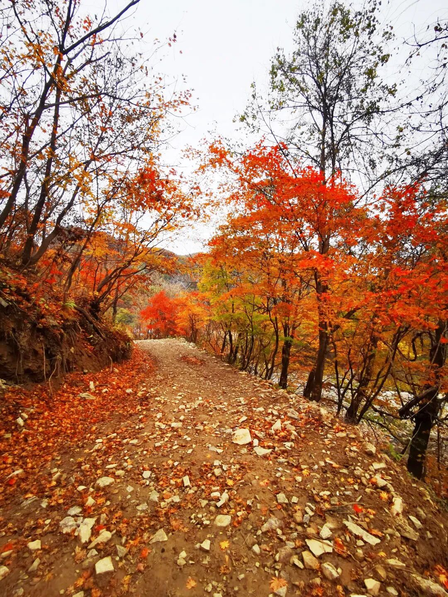

Guide · Practical
Beijing’s Autumn, Told One Calendar at a Time
Seven autumn festivals are listed for Beijing this year. They do not publish the same kind of date.
Four give a festival period with a start and an end. One gives a start date and an end date but moved its start. Two give no festival period at all — only a viewing window, dated by ten-day period in one case and to specific days in the other.
That difference is the most useful thing in the material. It explains why two people can both be right about when Beijing’s autumn “starts”, and why a half-forgotten date from a friend is not a reliable plan.
Six of the seven can be dated to a day. The seventh is dated only by ten-day period.
Worth a screenshot
Six dates that hold
- 1 October — Pofengling, the earliest festival period
- 15 October — Mutianyu’s first colour stage begins
- 16–17 October — Xiangshan, Wucai Qianshan and Beigong begin
- 24 October — Xishan’s opening ceremony, delayed from its original date
- 10 November — Mutianyu’s last colour stage ends
- 15 November — five festivals end on this date

Festivals with a period
Five that publish a start and an end
Pofengling
Fangshan, Zhoukoudian — 1 October to 15 November. Described in the source as the largest wild smoke tree concentration in north China; the source cites National Geographic describing it as north China’s most spectacular mountain foliage landscape.
The viewing forecast compiled alongside it runs in three stages: early-to-mid October, colour beginning; mid-October to early November, peak; early-to-mid November, leaves falling, described as suited to a slow visit. The stages overlap at both joins, and the last of them runs past the festival’s own end date.
Xiangshan
Haidian — 16 October to 15 November. Five routes are listed, including a temple-and-architecture walk from the east gate to Biyun Temple by way of Zhaomiao and Jianxinzhai, and a photography route that begins at Biyun Temple and ends at the east gate.
Wucai Qianshan
Shunyi, Longwantun — 16 October to 15 November. The source describes an evening programme running to 20:00, with performances and a market after dark.
Beigong
Fengtai — 17 October to 15 November. Over 4,000 mu of autumn colour. Metro Line 14 to Zhangguozhuang, then bus 385.
Xishan
Haidian — 24 October to 15 November. The source says the opening ceremony was delayed to 24 October. Four named viewpoints: Hongye Ling, the Hongye Grand Canyon, Guixiao Shi and Banshan Ting. A food market is described as running all day, and a programme as running every weekend of the festival.
Viewing windows, not festivals
Two that publish only colour stages
Mutianyu
Huairou — no festival period given. The source gives a colour calendar: 15–22 October first colour, 23 October to 2 November peak, 3–10 November late stage. Its autumn colour is led by Mongolian oak, with smoke tree and maple, plus other shrubs, mixed in.
Badaling forest park
Yanqing — no festival period given. The source gives a best-viewing period of mid-to-late October through early November. Two routes are listed, short and long, and the S2 suburban railway is the stated access.
“The end is more predictable than the start.”
What this means for planning
Where the calendar is solid, and where it is not
If you are reading this in the middle of October, the four festivals with periods are under way, with Xishan’s opening ceremony set for 24 October. Mutianyu is in its first colour stage. Badaling’s stated best window has begun, and runs to early November.
The end is more predictable than the start. Five of the seven end on 15 November: Pofengling, Xiangshan, Wucai Qianshan, Beigong and Xishan. Mutianyu’s last colour stage ends on 10 November, which is a stage of colour rather than a closing date. Badaling gives no end date.

Questions
Four ways people ask the same thing
One free day, starting from the city. Where?
Beigong. No booking required, metro and one bus, over 4,000 mu of colour.
I want to photograph, not walk.
Mutianyu between 23 October and 2 November, its stated peak stage, or Pofengling during its peak. Those are the two whose viewing stages are dated, which is the part that matters if the light is what you are going for.
Is anything open after dark?
Wucai Qianshan, to 20:00. It is the evening programme the source describes.
Can I do two in one day?
They sit in six districts: Fangshan, Haidian, Shunyi, Fengtai, Yanqing and Huairou. The source gives no travel times between them, so treat any comparison as yours to make.
Before you book
The dates and the tickets, as published
| Site | Dates as published | Ticket |
|---|---|---|
| Pofengling | 1 Oct – 15 Nov | Adult ¥50 |
| Xiangshan | 16 Oct – 15 Nov | ¥10, concessions ¥5 |
| Wucai Qianshan | 16 Oct – 15 Nov | Free |
| Beigong | 17 Oct – 15 Nov | Free, no booking |
| Xishan | 24 Oct – 15 Nov | Adult ¥10 |
| Mutianyu | Colour stages, 15 Oct – 10 Nov | ¥40, single |
| Badaling forest park | Best mid-to-late Oct – early Nov | ¥40 |
Transport, where the source gives it: Pofengling by the Jinggang’ao expressway, leaving at Yancun bridge, then Jingzhou road, Zhouzhang road and Xinsi road to the site; Beigong by metro Line 14 to Zhangguozhuang and bus 385; Xishan by bus 61 to the forest park terminus, or 318, 360 or 698 to Nanhetan and about 200 metres on foot; Badaling by the S2 suburban railway.
Xiangshan, Wucai Qianshan and Mutianyu are not given a transport route in the source, and none has been added.
Prices and dates are as published in the 2026 festival round-up compiled by Beijing Bendibao. Schedules move — confirm before travelling.
What this is
We do not sell tickets. We gather what is useful and keep it in one place, and we say where a date came from.
For the rest of the trip, the tools cover three days in Beijing, day trips from Beijing, and where to stay.